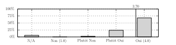
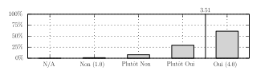

Général
Vous avez apprécié cet enseignement:

Votre niveau/cursus pour aborder l’enseignement est suffisant/adapté:

Cet enseignement est intéressant et/ou utile pour vous:

Commentaires:
- Sympatique de comprendre un peu de ces maths-là, dommage de ne pas être sûr que cela pourra nous servir plus tard.
- Excellent ! Maths intéressantes, profs motivés, et du ski. Un très bon souvenir, de 8h à 19h sans interruption tous les jours ! Merci :)
- Un des cours de maths que j’ai le plus apprecié depuis mon entrée aux Mines (grâce au ski, on se prête au jeu !)
- Le ski-maths, permettant de se focaliser sur le cours de maths uniquement est vraiment une aubaine pour ce cours intéressant … et complexe !
- Merci !
- Bon format Ski-maths! A pérenniser.
- Le seul cours de maths que j’ai vraiment apprécié, car peut-être un peu plus abordable que Maths I et Maths II, et avec un format sur une semaine qui incite plus à rester concentré sur les maths que lorsque les amphis sont éparpillés sur un semestre … Formule a conserver absolument !
- Il est à noter que le contexte du Ski-Maths m’a fait bien mieux assimiler le cours et les exos qu’en amphi classique. Je dois avouer n’avoir pas trop révisé pour la pâle, car je savais que j’avais globalement compris le cours (cas totalement différent de d’habitude).
- Vive le ski !
- J’ai beaucoup apprécié l’enseignement
- Excellent cours !
- L’association de cet enseignement avec le ski était bénéfique. Un esprit sain dans un corps sain.
- Le ski aide à avoir de la motivation pour les maths. Meilleur enseignement de Maths aux Mines, et je ne dis pas ça pour le ski !
- Sujet intéressant. Cours et profs agréables. J’aurais été moins assidu si cela ne s’était pas tenu au ski.
- Journées ski/maths bien équilibrées.
- J’ai adoré ce cours, bravo et merci !
- Je remercie le ski-maths, c’était bien sympathique :) ! J’accroche assez mal quand les maths sont trop abstraites, mais bon, la formule est géniale. A défaut de pouvoir diminuer l’abstraction (si les MP*** y tiennent …), essayer d’ajouter tout de même quelques applications basiques du cours (même pendant 10 minutes) en tout début de PC, avant des exercices plus abstraits. Et essayer de raccrocher les notions avec des choses vues en SI.
- La semaine de Ski-Maths est évidemment à garder !!!
- Le ski c’est top !
- A l’heure des restrictions budgétaires, il est scandaleux d’avoir eu un forfait payé lorsque j’avais dit au préalable ne pas en avoir besoin …
- Que du bonheur ce Ski-Maths.
- (Un des) seul enseignnement que j’ai suivi en entier et que je pense avoir compris (la pâle refletera peut-être le contraire). Merci pour votre investissement pour garder cette formule !
- Merci beaucoup à toute l’équipe enseignante, c’était un cours intéressant et bien mené !
- Merci.
- Aucun interêt sauf pour quelques applications.